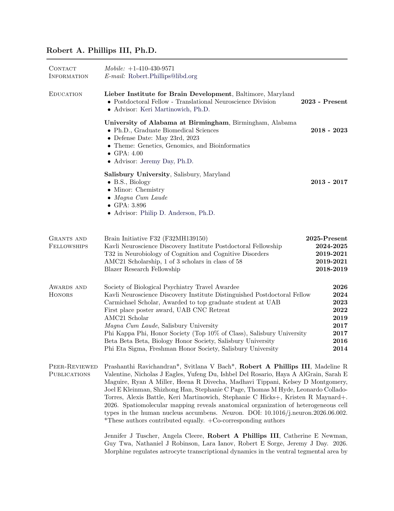
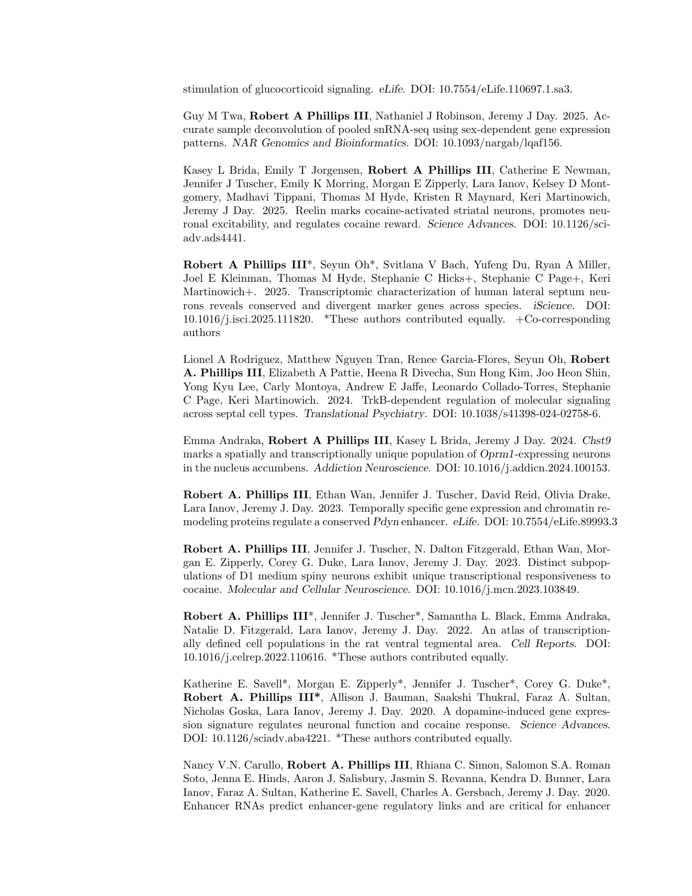
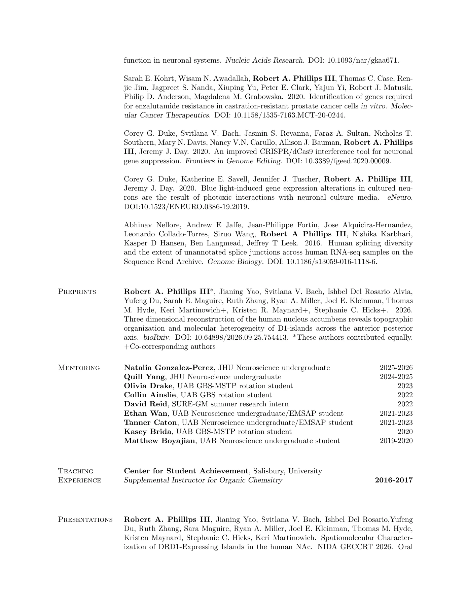
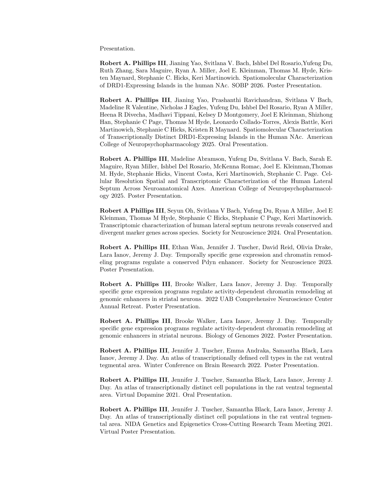
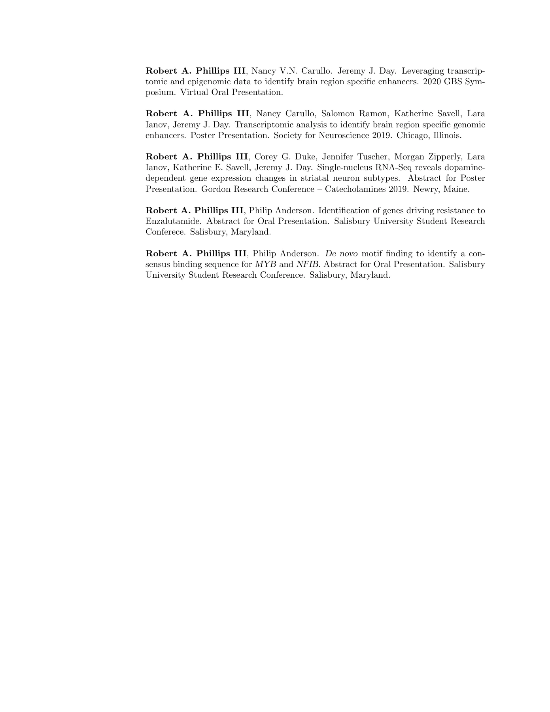

I use single-nucleus and spatial transcriptomics to investigate the cellular and molecular organization of reward circuits, asking which features are shared across species and where they diverge.
My research examines the molecular identities of cells in reward-related brain regions, their spatial organization, and the gene programs that shape their responses.
Three questions connect my work in transcriptomics, comparative neuroscience, and gene regulation.
01CELLULAR IDENTITY & SPATIAL ORGANIZATION
What cell types make up reward circuits, and how are they organized?
+
I use transcriptomic approaches to characterize molecularly distinct cell populations and investigate their organization within brain regions. My work spans cell-type diversity in the rat ventral tegmental area and the spatial molecular architecture of the human nucleus accumbens.
Which cellular and molecular features are conserved across species?
+
I compare cell identities, marker genes, and molecular programs across species. My work on the lateral septum examines shared and divergent features of human and mouse neurons, while comparisons of nucleus accumbens cell types extend this question across mammals.
Comparative transcriptomicsConserved & divergent features
03GENE REGULATION & CELLULAR RESPONSES
How do neuronal activity and drugs reshape gene regulation in distinct cell types?
+
My work investigates how distinct neuronal populations respond to cocaine and how activity-dependent transcription and chromatin remodeling regulate gene expression. Studies of D1 neuron subpopulations and a conserved Pdyn enhancer connect cell identity with molecular responses.
Cell-type-specific responsesChromatin & enhancers
A molecular perspective
From cell identity to molecular organization.
01
Define the cellular building blocks.
Single-nucleus and spatial transcriptomics connect molecularly defined cell populations with their locations within brain regions.
Building on molecular and spatial maps, I want to connect cell identity with circuit organization and explore how changes across connected cell types relate to psychiatric disease.
01 / CIRCUIT CONSERVATION
Are connections between molecularly defined cell types conserved across species?
Which cell types retain similar circuit partners across species, and where do those relationships diverge? A next step is to test how conservation of molecular identity relates to conservation of connectivity and circuit function.
02 / CONNECTED CELL TYPES & DISEASE
How does dysfunction in connected cell types contribute to psychiatric disease?
How do changes in gene regulation and signaling interact across connected cell populations? I want to investigate whether coordinated changes across these populations help explain circuit dysfunction in psychiatric disease.
These questions describe future research directions, building on my work in cellular and molecular neuroscience.
03 / AI in life sciences
AI in service of good science.
I’m interested in helping life scientists use AI responsibly in their everyday research. My own work uses large language models to support coding, computational workflows, and hypothesis development.
For me, responsible use means keeping scientific judgment, biological interpretation, and accountability with the researcher.
01 / SCIENTIFIC JUDGMENT
Keep the scientist in the loop.
I choose the methods and annotate the biology, then direct AI-assisted implementation in R and Python. I review generated code so I and other researchers can follow the analysis.
02 / BIOLOGICAL EVIDENCE
Check the code. Check the biology.
I compare outputs with known marker genes and biological evidence. Code review and evaluation of scientific conclusions are separate parts of that process.
03 / RESEARCHER EDUCATION
Make responsible use practical.
I want to help researchers understand where AI can be useful, how to question its outputs, and how to keep their work transparent and reproducible. Teaching and mentoring shape this interest.
Scroll inside the viewer to read all five pages. You can also open the PDF in a new tab for a larger view.
Page 1 of 5

Robert A. Phillips III, Ph.D.
Contact
Information
Mobile: +1-410-430-9571
E-mail: Robert.Phillips@libd.org
Education Lieber Institute for Brain Development , Baltimore, Maryland
• Postdoctoral Fellow - Translational Neuroscience Division 2023 - Present
• Advisor: Keri Martinowich, Ph.D.
University of Alabama at Birmingham , Birmingham, Alabama
• Ph.D., Graduate Biomedical Sciences 2018 - 2023
• Defense Date: May 23rd, 2023
• Theme: Genetics, Genomics, and Bioinformatics
• GPA: 4.00
• Advisor: Jeremy Day, Ph.D.
Salisbury University, Salisbury, Maryland
• B.S., Biology 2013 - 2017
• Minor: Chemistry
• Magna Cum Laude
• GPA: 3.896
• Advisor: Philip D. Anderson, Ph.D.
Grants and
Fellowships
Brain Initiative F32 (F32MH139150) 2025-Present
Kavli Neuroscience Discovery Institute Postdoctoral Fellowship 2024-2025
T32 in Neurobiology of Cognition and Cognitive Disorders 2019-2021
AMC21 Scholarship, 1 of 3 scholars in class of 58 2019-2021
Blazer Research Fellowship 2018-2019
A wards and
Honors
Society of Biological Psychiatry Travel Awardee 2026
Kavli Neuroscience Discovery Institute Distinguished Postdoctoral Fellow 2024
Carmichael Scholar, Awarded to top graduate student at UAB 2023
First place poster award, UAB CNC Retreat 2022
AMC21 Scholar 2019
Magna Cum Laude , Salisbury University 2017
Phi Kappa Phi, Honor Society (Top 10% of Class), Salisbury University 2017
Beta Beta Beta, Biology Honor Society, Salisbury University 2016
Phi Eta Sigma, Freshman Honor Society, Salisbury University 2014
Peer-Reviewed
Publications
Prashanthi Ravichandran*, Svitlana V Bach*, Robert A Phillips III , Madeline R
Valentine, Nicholas J Eagles, Yufeng Du, Ishbel Del Rosario, Haya A AlGrain, Sarah E
Maguire, Ryan A Miller, Heena R Divecha, Madhavi Tippani, Kelsey D Montgomery,
Joel E Kleinman, Shizhong Han, Stephanie C Page, Thomas M Hyde, Leonardo Collado-
Torres, Alexis Battle, Keri Martinowich, Stephanie C Hicks+, Kristen R Maynard+.
2026. Spatiomolecular mapping reveals anatomical organization of heterogeneous cell
types in the human nucleus accumbens. Neuron. DOI: 10.1016/j.neuron.2026.06.002.
*These authors contributed equally. +Co-corresponding authors
Jennifer J Tuscher, Angela Cleere, Robert A Phillips III , Catherine E Newman,
Guy Twa, Nathaniel J Robinson, Lara Ianov, Robert E Sorge, Jeremy J Day. 2026.
Morphine regulates astrocyte transcriptional dynamics in the ventral tegmental area by
Page 2 of 5

stimulation of glucocorticoid signaling. eLife. DOI: 10.7554/eLife.110697.1.sa3.
Guy M Twa, Robert A Phillips III , Nathaniel J Robinson, Jeremy J Day. 2025. Ac-
curate sample deconvolution of pooled snRNA-seq using sex-dependent gene expression
patterns. NAR Genomics and Bioinformatics . DOI: 10.1093/nargab/lqaf156.
Kasey L Brida, Emily T Jorgensen, Robert A Phillips III , Catherine E Newman,
Jennifer J Tuscher, Emily K Morring, Morgan E Zipperly, Lara Ianov, Kelsey D Mont-
gomery, Madhavi Tippani, Thomas M Hyde, Kristen R Maynard, Keri Martinowich,
Jeremy J Day. 2025. Reelin marks cocaine-activated striatal neurons, promotes neu-
ronal excitability, and regulates cocaine reward. Science Advances. DOI: 10.1126/sci-
adv.ads4441.
Robert A Phillips III *, Seyun Oh*, Svitlana V Bach, Yufeng Du, Ryan A Miller,
Joel E Kleinman, Thomas M Hyde, Stephanie C Hicks+, Stephanie C Page+, Keri
Martinowich+. 2025. Transcriptomic characterization of human lateral septum neu-
rons reveals conserved and divergent marker genes across species. iScience. DOI:
10.1016/j.isci.2025.111820. *These authors contributed equally. +Co-corresponding
authors
Lionel A Rodriguez, Matthew Nguyen Tran, Renee Garcia-Flores, Seyun Oh, Robert
A. Phillips III , Elizabeth A Pattie, Heena R Divecha, Sun Hong Kim, Joo Heon Shin,
Yong Kyu Lee, Carly Montoya, Andrew E Jaffe, Leonardo Collado-Torres, Stephanie
C Page, Keri Martinowich. 2024. TrkB-dependent regulation of molecular signaling
across septal cell types. Translational Psychiatry. DOI: 10.1038/s41398-024-02758-6.
Emma Andraka, Robert A Phillips III , Kasey L Brida, Jeremy J Day. 2024. Chst9
marks a spatially and transcriptionally unique population of Oprm1-expressing neurons
in the nucleus accumbens. Addiction Neuroscience. DOI: 10.1016/j.addicn.2024.100153.
Robert A. Phillips III , Ethan Wan, Jennifer J. Tuscher, David Reid, Olivia Drake,
Lara Ianov, Jeremy J. Day. 2023. Temporally specific gene expression and chromatin re-
modeling proteins regulate a conservedPdyn enhancer. eLife. DOI: 10.7554/eLife.89993.3
Robert A. Phillips III , Jennifer J. Tuscher, N. Dalton Fitzgerald, Ethan Wan, Mor-
gan E. Zipperly, Corey G. Duke, Lara Ianov, Jeremy J. Day. 2023. Distinct subpop-
ulations of D1 medium spiny neurons exhibit unique transcriptional responsiveness to
cocaine. Molecular and Cellular Neuroscience . DOI: 10.1016/j.mcn.2023.103849.
Robert A. Phillips III *, Jennifer J. Tuscher*, Samantha L. Black, Emma Andraka,
Natalie D. Fitzgerald, Lara Ianov, Jeremy J. Day. 2022. An atlas of transcription-
ally defined cell populations in the rat ventral tegmental area. Cell Reports . DOI:
10.1016/j.celrep.2022.110616. *These authors contributed equally.
Katherine E. Savell*, Morgan E. Zipperly*, Jennifer J. Tuscher*, Corey G. Duke*,
Robert A. Phillips III* , Allison J. Bauman, Saakshi Thukral, Faraz A. Sultan,
Nicholas Goska, Lara Ianov, Jeremy J. Day. 2020. A dopamine-induced gene expres-
sion signature regulates neuronal function and cocaine response. Science Advances .
DOI: 10.1126/sciadv.aba4221. *These authors contributed equally.
Nancy V.N. Carullo, Robert A. Phillips III , Rhiana C. Simon, Salomon S.A. Roman
Soto, Jenna E. Hinds, Aaron J. Salisbury, Jasmin S. Revanna, Kendra D. Bunner, Lara
Ianov, Faraz A. Sultan, Katherine E. Savell, Charles A. Gersbach, Jeremy J. Day. 2020.
Enhancer RNAs predict enhancer-gene regulatory links and are critical for enhancer
Page 3 of 5

function in neuronal systems. Nucleic Acids Research . DOI: 10.1093/nar/gkaa671.
Sarah E. Kohrt, Wisam N. Awadallah, Robert A. Phillips III , Thomas C. Case, Ren-
jie Jim, Jagpreet S. Nanda, Xiuping Yu, Peter E. Clark, Yajun Yi, Robert J. Matusik,
Philip D. Anderson, Magdalena M. Grabowska. 2020. Identification of genes required
for enzalutamide resistance in castration-resistant prostate cancer cells in vitro. Molec-
ular Cancer Therapeutics . DOI: 10.1158/1535-7163.MCT-20-0244.
Corey G. Duke, Svitlana V. Bach, Jasmin S. Revanna, Faraz A. Sultan, Nicholas T.
Southern, Mary N. Davis, Nancy V.N. Carullo, Allison J. Bauman,Robert A. Phillips
III, Jeremy J. Day. 2020. An improved CRISPR/dCas9 interference tool for neuronal
gene suppression. Frontiers in Genome Editing . DOI: 10.3389/fgeed.2020.00009.
Corey G. Duke, Katherine E. Savell, Jennifer J. Tuscher, Robert A. Phillips III ,
Jeremy J. Day. 2020. Blue light-induced gene expression alterations in cultured neu-
rons are the result of photoxic interactions with neuronal culture media. eNeuro.
DOI:10.1523/ENEURO.0386-19.2019.
Abhinav Nellore, Andrew E Jaffe, Jean-Philippe Fortin, Jose Alquicira-Hernandez,
Leonardo Collado-Torres, Siruo Wang, Robert A Phillips III , Nishika Karbhari,
Kasper D Hansen, Ben Langmead, Jeffrey T Leek. 2016. Human splicing diversity
and the extent of unannotated splice junctions across human RNA-seq samples on the
Sequence Read Archive. Genome Biology . DOI: 10.1186/s13059-016-1118-6.
Preprints Robert A. Phillips III *, Jianing Yao, Svitlana V. Bach, Ishbel Del Rosario Alvia,
Yufeng Du, Sarah E. Maguire, Ruth Zhang, Ryan A. Miller, Joel E. Kleinman, Thomas
M. Hyde, Keri Martinowich+, Kristen R. Maynard+, Stephanie C. Hicks+. 2026.
Three dimensional reconstruction of the human nucleus accumbens reveals topographic
organization and molecular heterogeneity of D1-islands across the anterior posterior
axis. bioRxiv. DOI: 10.64898/2026.09.25.754413. *These authors contributed equally.
+Co-corresponding authors
Mentoring Natalia Gonzalez-Perez , JHU Neuroscience undergraduate 2025-2026
Quill Y ang, JHU Neuroscience undergraduate 2024-2025
Olivia Drake , UAB GBS-MSTP rotation student 2023
Collin Ainslie , UAB GBS rotation student 2022
David Reid , SURE-GM summer research intern 2022
Ethan W an, UAB Neuroscience undergraduate/EMSAP student 2021-2023
T anner Caton, UAB Neuroscience undergraduate/EMSAP student 2021-2023
Kasey Brida , UAB GBS-MSTP rotation student 2020
Matthew Boyajian , UAB Neuroscience undergraduate student 2019-2020
Teaching
Experience
Center for Student Achievement , Salisbury, University
Supplemental Instructor for Organic Chemsitry 2016-2017
Presentations Robert A. Phillips III , Jianing Yao, Svitlana V. Bach, Ishbel Del Rosario,Yufeng
Du, Ruth Zhang, Sara Maguire, Ryan A. Miller, Joel E. Kleinman, Thomas M. Hyde,
Kristen Maynard, Stephanie C. Hicks, Keri Martinowich. Spatiomolecular Character-
ization of DRD1-Expressing Islands in the human NAc. NIDA GECCRT 2026. Oral
Page 4 of 5

Presentation.
Robert A. Phillips III , Jianing Yao, Svitlana V. Bach, Ishbel Del Rosario,Yufeng Du,
Ruth Zhang, Sara Maguire, Ryan A. Miller, Joel E. Kleinman, Thomas M. Hyde, Kris-
ten Maynard, Stephanie C. Hicks, Keri Martinowich. Spatiomolecular Characterization
of DRD1-Expressing Islands in the human NAc. SOBP 2026. Poster Presentation.
Robert A. Phillips III , Jianing Yao, Prashanthi Ravichandran, Svitlana V Bach,
Madeline R Valentine, Nicholas J Eagles, Yufeng Du, Ishbel Del Rosario, Ryan A Miller,
Heena R Divecha, Madhavi Tippani, Kelsey D Montgomery, Joel E Kleinman, Shizhong
Han, Stephanie C Page, Thomas M Hyde, Leonardo Collado-Torres, Alexis Battle, Keri
Martinowich, Stephanie C Hicks, Kristen R Maynard. Spatiomolecular Characterization
of Transcriptionally Distinct DRD1-Expressing Islands in the Human NAc. American
College of Neuropsychopharmacology 2025. Oral Presentation.
Robert A. Phillips III , Madeline Abramson, Yufeng Du, Svitlana V. Bach, Sarah E.
Maguire, Ryan Miller, Ishbel Del Rosario, McKenna Romac, Joel E. Kleinman,Thomas
M. Hyde, Stephanie Hicks, Vincent Costa, Keri Martinowich, Stephanie C. Page. Cel-
lular Resolution Spatial and Transcriptomic Characterization of the Human Lateral
Septum Across Neuroanatomical Axes. American College of Neuropsychopharmacol-
ogy 2025. Poster Presentation.
Robert A Phillips III , Seyun Oh, Svitlana V Bach, Yufeng Du, Ryan A Miller, Joel E
Kleinman, Thomas M Hyde, Stephanie C Hicks, Stephanie C Page, Keri Martinowich.
Transcriptomic characterization of human lateral septum neurons reveals conserved and
divergent marker genes across species. Society for Neuroscience 2024. Oral Presentation.
Robert A. Phillips III , Ethan Wan, Jennifer J. Tuscher, David Reid, Olivia Drake,
Lara Ianov, Jeremy J. Day. Temporally specific gene expression and chromatin remod-
eling programs regulate a conserved Pdyn enhancer. Society for Neuroscience 2023.
Poster Presentation.
Robert A. Phillips III , Brooke Walker, Lara Ianov, Jeremy J. Day. Temporally
specific gene expression programs regulate activity-dependent chromatin remodeling at
genomic enhancers in striatal neurons. 2022 UAB Comprehensive Neuroscience Center
Annual Retreat. Poster Presentation.
Robert A. Phillips III , Brooke Walker, Lara Ianov, Jeremy J. Day. Temporally
specific gene expression programs regulate activity-dependent chromatin remodeling at
genomic enhancers in striatal neurons. Biology of Genomes 2022. Poster Presentation.
Robert A. Phillips III , Jennifer J. Tuscher, Emma Andraka, Samantha Black, Lara
Ianov, Jeremy J. Day. An atlas of transcriptionally defined cell types in the rat ventral
tegmental area. Winter Conference on Brain Research 2022. Poster Presentation.
Robert A. Phillips III , Jennifer J. Tuscher, Samantha Black, Lara Ianov, Jeremy J.
Day. An atlas of transcriptionally distinct cell populations in the rat ventral tegmental
area. Virtual Dopamine 2021. Oral Presentation.
Robert A. Phillips III , Jennifer J. Tuscher, Samantha Black, Lara Ianov, Jeremy J.
Day. An atlas of transcriptionally distinct cell populations in the rat ventral tegmen-
tal area. NIDA Genetics and Epigenetics Cross-Cutting Research Team Meeting 2021.
Virtual Poster Presentation.
Page 5 of 5

Robert A. Phillips III , Nancy V.N. Carullo. Jeremy J. Day. Leveraging transcrip-
tomic and epigenomic data to identify brain region specific enhancers. 2020 GBS Sym-
posium. Virtual Oral Presentation.
Robert A. Phillips III , Nancy Carullo, Salomon Ramon, Katherine Savell, Lara
Ianov, Jeremy J. Day. Transcriptomic analysis to identify brain region specific genomic
enhancers. Poster Presentation. Society for Neuroscience 2019. Chicago, Illinois.
Robert A. Phillips III , Corey G. Duke, Jennifer Tuscher, Morgan Zipperly, Lara
Ianov, Katherine E. Savell, Jeremy J. Day. Single-nucleus RNA-Seq reveals dopamine-
dependent gene expression changes in striatal neuron subtypes. Abstract for Poster
Presentation. Gordon Research Conference – Catecholamines 2019. Newry, Maine.
Robert A. Phillips III , Philip Anderson. Identification of genes driving resistance to
Enzalutamide. Abstract for Oral Presentation. Salisbury University Student Research
Conferece. Salisbury, Maryland.
Robert A. Phillips III , Philip Anderson. De novo motif finding to identify a con-
sensus binding sequence for MYB and NFIB. Abstract for Oral Presentation. Salisbury
University Student Research Conference. Salisbury, Maryland.